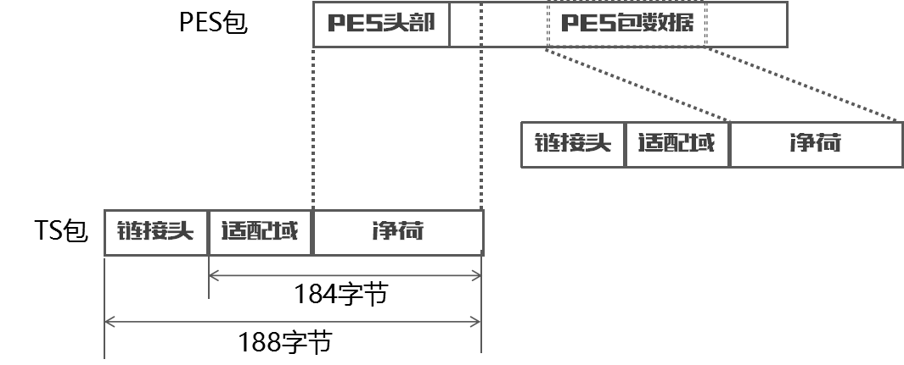
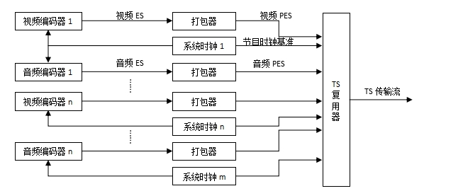
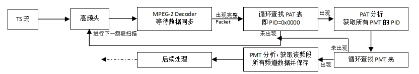
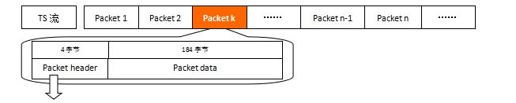
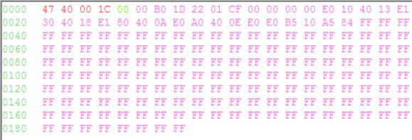
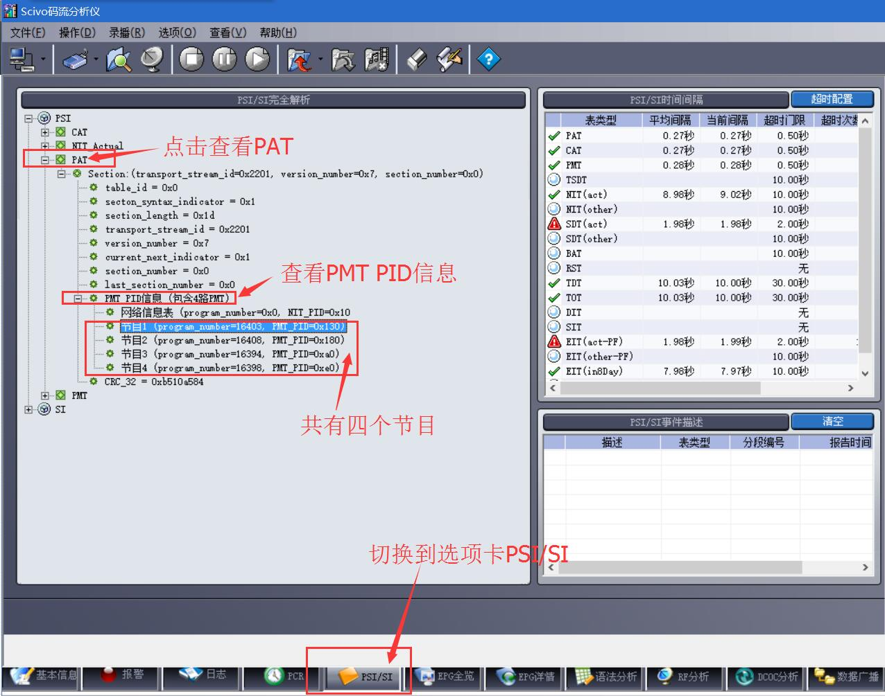

PSI/SI资料快查
资料入口

这里是PSI/SI相关资料的主入口， 你有任何需要查询的资料，都可以从这里开始寻找...
- 首页 返回首页
- 基础
- PSI/SI名词速查
- TS流的制作、传输及解析
- PSI信息
- PAT表、 PMT表、 NIT表、 CAT表
- SI信息
- SDT表、 EIT表、 TDT表、 BAT表、 TOT表、 RST表、 SIT表、 ST表、 DIT表
- 描述子Descriptor列表
- 进入详细列表
- 表格
- 进入详细列表
版权声明：未经许可，请勿转载！
©2016 · OneLib智库 · 分享知识和经验，打造精品智库平台
TS流的制作、传输及解析
DVB和PSI/SI的基础知识
在这一章中，你讲了解到：ES、PES、PS和TS是什么，复用与解复用的概念，TS流的传输方式，TS流的包结构 等。 这些内容是学习DVB的PSI/SI信息的最基本知识。
TS流、PS流、PES流和ES流都是什么
Brief Introduction Of TS, PS, PES and ES
ES流（Elementary Stream） 基本码流，不分段的音频、视频或其他信息的连续码流。
PES流 把基本流ES分割成段，并加上相应头文件打包成形的打包基本码流。
PS流（Program Stream） 节目流，将具有共同时间基准的一个或多个PES组合（复合）而成的单一数据流（用于播放或编辑系统，如m2p）。
TS流（Transport Stream） 传输流，将具有共同时间基准或独立时间基准的一个或多个PES组合（复合）而成的单一数据流（用于数据传输）。
PES包装载到TS包
在实际传输中，PES包会被切割后装载到TS包中。下图是PES和TS之间的关系图：
-
要注意的几点是：
- （1）一个PES包可以装载到不同的TS包
- （2）每一个TS包必须只含有从一个PES来的数据
- （3）PES包头必须跟在TS包的链接头后面
- （4）对于一个特定的PES，最后一个TS包可以含有填充比特
TS和PS的区别
TS流的包结构是长度是固定的；PS流的包结构是可变长度的。 这导致了 TS流的抵抗传输误码的能力强于PS流 （TS码流由于采用了固定长度的包结构， 当传输误码破坏了某一TS包的同步信息时，接收机可在固定的位置检测它后面包中的同步信息，从而恢复同步，避免了信息丢失。 而PS包由于长度是变化的，一旦某一 PS包的同步信息丢失， 接收机无法确定下一包的同步位置，就会造成失步，导致严重的信息丢失。 因此，在信道环境较为恶劣，传输误码较高时，一般采用TS码流；而在信道环境较好，传输误码较低时，一般采用PS码流。）
由于TS码流具有较强的抵抗传输误码的能力，因此目前在传输媒体中进行传输的MPEG-2码流基本上都采用了TS码流的包格。
TS的复用与解复用
Multiplexing and Demultiplexing of Transport Stream
在数字电视系统的前端，所有的数据（视频、音频、PSI/SI信息）都会被复用器(Multiplexer)复用成TS流，从而进行传送（见下图）。
TS复用(Multiplexing)当机顶盒等接收器收到的数据，自然就是被复用后的一个个包(Package)了。这样的数据是不能直接使用的。 这时候，我们要做的就是把被复用的TS流 解复用(Demultiplexing, 简称Demux)。
解复用的意义在于，由于TS流是一种复用的码流，里面混杂了多种类型的包；解复用TS流可以将类型相同的Packet存入相同缓存，分别处理。 这样就可以将Video、Audio或者其他业务信息(如PSI/SI信息)的数据区分开来。
DVB搜台过程
Process of DVB Scanning
DVB搜台过程
机顶盒先调整高频头到一个固定的频率(一般是主频点，如深圳天威的主频点是259MHZ)，如果此频率有数字信号， 则COFDM芯片(如MT352)会自动把TS流数据传送给MPEG-2 decoder。 MPEG-2 decoder先进行数据的同步，也就是等待完整的Packet的到来.然后循环查找是否出现PID==0x0000的Packet; 如果出现了，则马上进入分析PAT的处理，获取了所有的PMT的PID。 接着循环查找是否出现PMT，如果发现了，则自动进入PMT分析，获取该频段所有的频道数据并保存。 如果没有发现PAT或者没有发现PMT，说明该频段没有信号，进入下一个频率扫描。
在解析TS流的时候，首先寻找PAT表，根据PAT获取所有PMT表的PID；再寻找PMT表，获取该频段所有节目数据并保存。 这样，只需要知道节目的PID就可以根据PacketHeade给出的PID过滤出不同的Packet，从而观看不同的节目。 这些就是PAT表和PMT表之间的关系。
TS流的格式
Structure of Transport Stream
TS流的包结构
TS流是基于Packet的位流格式，即由n个包组成；每个包是188个字节（或204个字节，在188个字节后加上了16字节的CRC校验数据，其他格式一样）。 下图是一个TS流，以第k个包(Package)为例：
| Packet Header（包头）信息说明 | |||
| # | 标识 | 位数 | 说明 |
| 0 | sync_byte | 8 bits | 同步字节，固定是0x47 |
| 1 | transport_error_indicator | 1 bits | 错误指示信息（1：该包至少有1bits传输错误） |
| 2 | payload_unit_start_indicator | 1 bits | 负载单元开始标志（packet不满188字节时需填充） |
| 3 | transport_priority | 1 bits | 传输优先级标志（1：优先级高） |
| 4 | PID | 13 bits | Packet ID号码，唯一的号码对应不同的包 |
| 5 | transport_scrambling_control | 2 bits | 加密标志（00：未加密；其他表示已加密） |
| 6 | adaptation_field_control | 2 bits | 附加区域控制 |
| 7 | continuity_counter | 4 bits | 包递增计数器 |
上面表格是一个包(Package)的头(Header)的说明，其中需要注意的是：PID是TS流中唯一识别标志，Packet Data是什么内容就是由PID决定的。 如果一个TS流中的一个Packet的Packet Header中的PID是0x0000，那么这个Packet的Packet Data就是DVB的PAT表而非其他类型数据（如Video、Audio或其他业务信息）。
下表给出了一些表的PID值，这些值是固定的，不允许更改。
| TS流中PID的分配 | ||
| 表 | PID值 | 说明 |
| PAT | 0x0000 | - |
| CAT | 0x0001 | - |
| TSDT | 0x0002 | - |
| 预留 | 0x0003 至0x000F | 无 |
| NIT, ST | 0x0010 | - |
| SDT , BAT, ST | 0x0011 | - |
| EIT, ST | 0x0012 | - |
| RST, ST | 0x0013 | - |
| TDT, TOT, ST | 0x0014 | - |
| 网络同步 | 0x0015 | 无 |
| 预留使用 | 0x0016 至 0x001B | 无 |
| 带内信令 | 0x001C | 无 |
| DIT | 0x001E | 无 |
| SIT | 0x001F | 无 |
TS流中包(Packect)的包头结构
下面以一个TS流的其中一个Packet中的Packet Header为例进行说明：
| 位号 | 0 | 1 | 2 | 3 | 4 | 5 | 6 | 7 | 8 | 9 | 10 | 11 | 12 | 13 | 14 | 15 | 16 | 17 | 18 | 19 | 20 | 21 | 22 | 23 | 24 | 25 | 26 | 27 | 28 | 29 | 30 | 31 | ... |
| Packet（二进制） | 0 | 1 | 0 | 0 | 0 | 1 | 1 | 1 | 0 | 0 | 0 | 0 | 0 | 1 | 1 | 1 | 1 | 1 | 1 | 0 | 0 | 1 | 0 | 1 | 0 | 0 | 0 | 1 | 0 | 0 | 1 | 0 | ... |
| Packet（十六进制） | 4 | 7 | 0 | 7 | E | 5 | 1 | 2 | ... | ||||||||||||||||||||||||
| Packet Header信息 | 0: sync_byte=0x47 | 1 | 2 | 3 | 4: PID (这里是0x07e5) | 5 | 6 | 7 | ... | ||||||||||||||||||||||||
拖动可显示更多数据
上表中，第一行为表头的位号（0-31，共32位）， 第二行为每位的二进制数值， 第三行为每个字节的16进制数值， 最后一行对应上面的表格《Packet Header（包头）信息说明》的数据。下表是《Packet Header（包头）信息说明》的Demo数据。
| Packet Header（包头）信息Demo | |||
| # | 标识 | 位数 | 说明 |
| 0 | sync_byte | 8 bits | 固定是0x47 |
| 1 | transport_error_indicator | 1 bits | 值为0，表示当前包没有发生传输错误。错误指示信息（1：该包至少有1bits传输错误） |
| 2 | payload_unit_start_indicator | 1 bits | 值为0，含义参考ISO13818-1标准文档。负载单元开始标志（packet不满188字节时需填充） |
| 3 | transport_priority | 1 bits | 值为0，表示当前包是低优先级。传输优先级标志（1：优先级高） |
| 4 | PID | 13 bits | PID=00111 11100101即0x07e5,是Video PID。Packet ID号码，唯一的号码对应不同的包 |
| 5 | transport_scrambling_control | 2 bits | 值为0x00，表示节目没有加密。加密标志（00：未加密；其他表示已加密） |
| 6 | adaptation_field_control | 2 bits | 值为0x01,具体含义请参考ISO13818-1。附加区域控制 |
| 7 | continuity_counter | 4 bits | 值为0x02,表示当前传送的相同类型的包是第3个。包递增计数器 |
TS流中包(Packect)的包数据结构
TS流的包数据是承载实际数据的区域，根据不同的PID，有不同的解析方式。 下一节将以PAT表为例进行解析，本节暂不介绍。
TS流结构小结
回顾一下，TS流是一种位流（当然就是数字的）， 它是由ES流分割成PES后复用而成的；它经过网络传输被机顶盒接收到； 数字电视机顶盒接收到TS流后将解析TS流。
TS流是由一个个Packet（包）构成的， 每个包都是由Packet Header（包头）和Packet Data（包数据）组成的。 其中Packet Header指示了该Packet是什么属性的，并给出了该Packet Data的数据的唯一网络标识符PID。
解析PAT表的数据包
Analyze the Package of PAT
下图是用码流分析软件得到的PAT表的数据包。
可以将上图的的数据这样划分：
| 包头(Package Header) | 包数据(Package Data) |
| 47 40 00 1C | 00 B0 1D 22 01 CF 00 00 00 00 E0 10 40 13 E1 30 40 18 E1 ... FF FF |
注：表格内数据均为16进制数值。前4个字节为包头，后面的184个字节为包数据。
PAT表的包头
细分其表头(Package Header)数据（47 40 00 1C）如下：
| 位号 | 0 | 1 | 2 | 3 | 4 | 5 | 6 | 7 | 8 | 9 | 10 | 11 | 12 | 13 | 14 | 15 | 16 | 17 | 18 | 19 | 20 | 21 | 22 | 23 | 24 | 25 | 26 | 27 | 28 | 29 | 30 | 31 | ... |
| Packet（二进制） | 0 | 1 | 0 | 0 | 0 | 1 | 1 | 1 | 0 | 1 | 0 | 0 | 0 | 0 | 0 | 0 | 0 | 0 | 0 | 0 | 0 | 0 | 0 | 0 | 0 | 0 | 0 | 1 | 1 | 1 | 0 | 0 | ... |
| Packet（十六进制） | 4 | 7 | 4 | 0 | 0 | 0 | 1 | C | ... | ||||||||||||||||||||||||
| Packet Header信息 | 0*: sync_byte=0x47 | 1* | 2* | 3* | 4*: PID (这里是0x0000) | 5* | 6* | 7* | ... | ||||||||||||||||||||||||
拖动可显示更多数据
上表中，第一行为表头的位号（0-31，共32位）， 第二行为每位的二进制数值， 第三行为每个字节的16进制数值， 最后一行的数据说明参看下面的表格。
| Packet Header（包头）信息Demo | |||
| # | 标识 | 位数 | 说明 |
| 0* | sync_byte | 8 bits | 固定是0x47 |
| 1* | transport_error_indicator | 1 bits | 值为0，表示当前包没有发生传输错误。错误指示信息（1：该包至少有1bits传输错误） |
| 2* | payload_unit_start_indicator | 1 bits | 值为1，含义参考ISO13818-1标准文档。负载单元开始标志（packet不满188字节时需填充） |
| 3* | transport_priority | 1 bits | 值为0，表示当前包是低优先级。传输优先级标志（1：优先级高） |
| 4* | PID | 13 bits | PID=0x0000,说明是PAT表。Packet ID号码，唯一的号码对应不同的包 |
| 5* | transport_scrambling_control | 2 bits | 值为0x00，表示节目没有加密。加密标志（00：未加密；其他表示已加密） |
| 6* | adaptation_field_control | 2 bits | 值为0x01,具体含义请参考ISO13818-1。附加区域控制 |
| 7* | continuity_counter | 4 bits | 值为0xC,表示当前传送的相同类型的包是第12个。包递增计数器 |
PAT表的包数据总览
该包的数据部分(Package Data)为：
00 B0 1D 22 01 CF 00 00 00 00 E0 10 40 13 E1 30 40 18 E1 80 40 0A E0 A0 40 0E E0 B5 10 A5 84 FF ... FF FF
注意到这里有一个绿色的 00，
这是因为在包头后需要除去一个字节才是有效数据（payload_unit_start_indicator="1"）。
因此，真正要分析的数据应该是红色部分：
B0 1D 22 01 CF 00 00 00 00 E0 10 40 13 E1 30 40 18 E1 80 40 0A E0 A0 40 0E E0 B5 10 A5 84 FF ... FF FF
解析前8个字节
下面对前8个字节（0-7字节，共计64 bits）进行分析：
B0 1D 22 01 CF 00 00 00 00 E0 10 40 13 E1 30 40 18 E1 80 40 0A E0 A0 40 0E E0 B5 10 A5 84 FF ... FF FF
| 位号 | 0 | 1 | 2 | 3 | 4 | 5 | 6 | 7 | 8 | 9 | 10 | 11 | 12 | 13 | 14 | 15 | 16 | 17 | 18 | 19 | 20 | 21 | 22 | 23 | 24 | 25 | 26 | 27 | 28 | 29 | 30 | 31 | 32 | 33 | 34 | 35 | 36 | 37 | 38 | 39 | 40 | 41 | 42 | 43 | 44 | 45 | 46 | 47 | 48 | 49 | 50 | 51 | 52 | 53 | 54 | 55 | ... |
| Binary | 0 | 0 | 0 | 0 | 0 | 0 | 0 | 0 | 1 | 0 | 1 | 1 | 0 | 0 | 0 | 0 | 0 | 0 | 0 | 1 | 1 | 1 | 0 | 1 | 0 | 0 | 1 | 0 | 0 | 0 | 1 | 0 | 0 | 0 | 0 | 0 | 0 | 0 | 0 | 1 | 1 | 1 | 0 | 0 | 1 | 1 | 1 | 1 | 0 | 0 | 0 | 0 | 0 | 0 | 0 | 0 | ... |
| Hex | 0 | 0 | B | 0 | 1 | D | 2 | 2 | 0 | 1 | C | F | 0 | 0 | ... | ||||||||||||||||||||||||||||||||||||||||||
| 结构 | 0*: table_id=0x00 | 1* | 2* | 3* | 4*: section_length (这里是0x01D) | 5* | 6* | 7* | 8* | 9* | 10* | ... | |||||||||||||||||||||||||||||||||||||||||||||
拖动可显示更多数据
| # | 字段名 | 占位 | 具体值 | 次序 | 说明 |
| 0* | table_id | 8 bits | 0000 0000(即0x00) | 第0个字节 00 | PAT的table_id只能是0x00 |
| 1* | section_syntax_indicator | 1 bit | 1 | 第1、2个字节 B0 1D | 段语法标志位，固定为1 |
| 2* | zero | 1 bit | 0 | ||
| 3* | reserved | 2 bits | 11 (Binary) | ||
| 4* | section_length | 12 bits | 00 00 00 01 11 01(即0x1D，十进制值为29) | 意思是 段长度为29字节 | |
| 5* | transport_stream_id | 16 bits | 00 10 00 10 00 00 00 01(即0x2201) | 第3、4个字节 22 01 | TS的识别号 |
| 6* | reserved | 2 bits | 11 | 第5个字节 CF | TS的识别号 |
| 7* | version_number | 5 bits | 0 01 11 | 一旦PAT有变化，版本号加1 | |
| 8* | current_next_indicator | 1 bit | 1 | 当前传送的PAT表可以使用，若为0则要等待下一个表 | |
| 9* | section_number | 4 bits | 00 00(即0x00) | 第6个字节 00 | 给出section号，在sub_table中， 第一个section其section_number为"0x00", 每增加一个section,section_number加一 |
| 10* | last_section_number | 4 bits | 00 00(即0x00) | 第7个字节 00 | sub_table中最后一个section的section_number |
| 循环开始（循环内的数据解析见下一节内容！） | |||||
| - | program_number | 16 bits | -- | -- | - |
| - | reserved | 3 bits | -- | -- | - |
| - | network_id 或 program_map_PID | 13 bits | -- | -- | program_number为0x0000时， 这里是network_id(NIT的PID)； 其余情况是program_map_PID(PMT的PID) |
| 循环结束 | |||||
| - | CRC_32 | 32 bits | -- | 最后4个字节 | - |
解析循环部分
下面对后续几个字节（第8个字符开始）进行分析：
B0 1D 22 01 CF 00 00 00 00 E0 10 40 13 E1 30 40 18 E1 80 40 0A E0 A0 40 0E E0 B5 10 A5 84 FF ... FF FF
在上一小节节的表格中，每一个循环都是4个字节(32 bits)，我们在这里就先解析第一个循环：
B0 1D 22 01 CF 00 00 00 00 E0 10 40 13 E1 30 40 18 E1 80 40 0A E0 A0 40 0E E0 B5 10 A5 84 FF ... FF FF
| 位号 | 0 | 1 | 2 | 3 | 4 | 5 | 6 | 7 | 8 | 9 | 10 | 11 | 12 | 13 | 14 | 15 | 16 | 17 | 18 | 19 | 20 | 21 | 22 | 23 | 24 | 25 | 26 | 27 | 28 | 29 | 30 | 31 | ... |
| Binary | 0 | 0 | 0 | 0 | 0 | 0 | 0 | 0 | 0 | 0 | 0 | 0 | 0 | 0 | 0 | 0 | 1 | 1 | 1 | 0 | 0 | 0 | 0 | 0 | 0 | 0 | 0 | 1 | 0 | 0 | 0 | 0 | ... |
| Hex | 0 | 0 | 0 | 0 | E | 0 | 1 | 0 | ... | ||||||||||||||||||||||||
| 结构 | 1*: program_number = 0x0000 | 2*: reserved | 3*: network_id = 0x10 | ... | |||||||||||||||||||||||||||||
拖动可显示更多数据
| # | 字段名 | 占位 | 具体值 | 说明 |
| 1* | program_number | 16 bits | 0x0000 | program_number = 0x0000 |
| 2* | reserved | 3 bits | 111 | - |
| 3* | program_map_PID | 13 bits | 0x0000 | 因为program_number为0x0000， 所以这里是network_id(NIT的PID) |
继续解析下一个循环：
B0 1D 22 01 CF 00 00 00 00 E0 10 40 13 E1 30 40 18 E1 80 40 0A E0 A0 40 0E E0 B5 10 A5 84 FF ... FF FF
| 位号 | 0 | 1 | 2 | 3 | 4 | 5 | 6 | 7 | 8 | 9 | 10 | 11 | 12 | 13 | 14 | 15 | 16 | 17 | 18 | 19 | 20 | 21 | 22 | 23 | 24 | 25 | 26 | 27 | 28 | 29 | 30 | 31 | ... |
| Binary | 0 | 1 | 0 | 0 | 0 | 0 | 0 | 0 | 0 | 0 | 0 | 1 | 0 | 0 | 1 | 1 | 1 | 1 | 1 | 0 | 0 | 0 | 0 | 1 | 0 | 0 | 1 | 1 | 0 | 0 | 0 | 0 | ... |
| Hex | 4 | 0 | 1 | 3 | E | 1 | 3 | 0 | ... | ||||||||||||||||||||||||
| 结构 | 1*: program_number = 0x4013(即十进制16403) | 2*: reserved | 3*: program_map_PID = 0x130(即PMT_PID为0x130) | ... | |||||||||||||||||||||||||||||
拖动可显示更多数据
| # | 字段名 | 占位 | 具体值 | 说明 |
| 1* | program_number | 16 bits | 0x4013 | program_number = 0x4013(即十进制16403) |
| 2* | reserved | 3 bits | 111 | - |
| 3* | program_map_PID | 13 bits | 0x130 | 因为program_number不为0x0000， 所以这里是program_map_PID = 0x130(即PMT_PID为0x130) |
通过这个循环，我们可以知道，在这个TS中，有一个节目号为0x4013(即十进制16403)的节目，其PMT的PID为0x130。那么要想获取这个节目的详细信息，就要去解析PID为0x130的PMT表。（关于PMT表的解析可参看下一节内容）
为了不占用过多空间来显示这样重复的内容，关于更多循环的分析就不显示在正文，如果你仍想看，可以 点击这里显示或隐藏。
循环汇总
将所有循环遍历完毕后，我们就能找出4个节目。下图是码流分析软件的截图。
PMT PID列表
下面表格是通过对PAT表分析后得到的数据。在分析完PMT表后，还可以对这张表进行补充，得到每个节目(Service)的名称。
| # | 节目号 | PMT PID |
| 1 | 16403 | 0x130 |
| 2 | 16408 | 0x180 |
| 3 | 16394 | 0xA0 |
| 4 | 16398 | 0xE0 |
PAT表包数据解析小结
对我们来说，PAT就是一个总入口。PAT告诉了我们，这个TS流中有几个节目，以及它们的PMT PID分别是多少。有了PMT的PID，我们就可以继续下一步了。
本章小结
Summary
本章对DVB及PSI/SI相关的知识作了细致的讲解，对初学者适用。
参考文档
References
| # | 文档名称 | 作者 |
| 1 | 《PSI/SI教程：第一章：预备知识》 | 林晓州 |
| 2 | 《5.1数字电视信号复用与解复用概念》 | 网络下载 |
| 3 | 《ES、TS、PS流》 | 网络下载 |
版本信息
Version Information
| # | 发布日期 | 版本 | 更新内容 | 作者 | 审核 |
| 1 | 2016年02月24日 | V1.0 | 整合了多个文档资料，对PSI/SI学习所需的知识进行系统的总结。 | 林晓州 | —— |